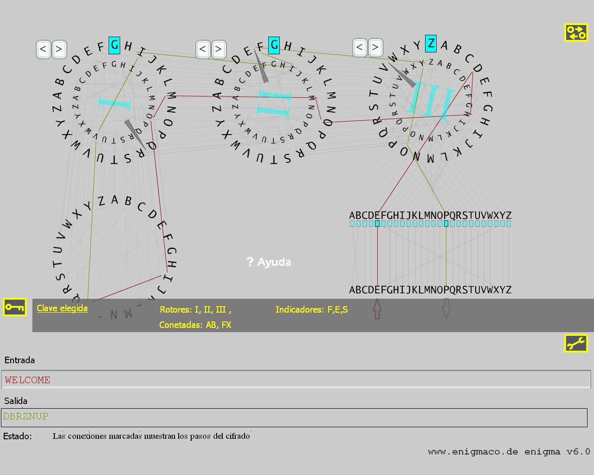

Historia
La máquina de rotores "Enigma" vino al mundo en
1923 de la mano del ingeniero alemán Arthur Scherbius. Se esperaba que fuera
útil para cifrar mensajes del área económica. En los años 30, el ejército alemán descubrió Enigma, y le añadió el también llamado "plugboard" (panel de control) y cambió las conexiones de los rotores. Durante la 2ª Guerra Mundial, los militares alemanes utilizaron unos 200.000 de estos
criptosistemas para codifiar los mensajes que se intercambiaban.
Construcción y funcionamiento
Enigma consiste en sus partes
principales del panel de control, los tres rotores y el reflector pensado para
redirigir la corriente eléctrica. La máquina Enigma original relaciona cada letra introducida por el teclado con una letra cifrada
cerrando el circuito eléctrico que se reconfigura después de cada entrada de clave.
La muestra gráfica de los diferentes componentes de Enigma
La alineación de los tres rotores
se muestra de acuerdo con la construcción de la Enigma original: el primer rotor ("rotor rápido" que cambia su posición con cada entrada de letra)
es el que se encuentra más a la derecha. El número romano en el centro de cada rotor indica cuál de las cinco posibilidades del rotor
se ha elegido (I, II, III,
IV o
V). Las conexiones del rotor que se ven en el modelo son exactamente iguales que las de la máquina Enigma original.
Prerequisitos
Se necesita un sistema rápido, una resolución de como mínimo
800x600 píxeles, color verdadero (true colors) y una versión 7 ó superior del Flash.
Un breve ejemplo
Abrimos la
ventana de la máquina, hacemos clic en el campo de texto "Entrada:" y pulsamos la tecla "c". El panel de control deja C como C mientras marca la conexión específica
en rojo. La corriente eléctrica mueve entonces el rotor más a la derecha hasta su letra A.
Entonces A se conecta con B. La corriente entra en el rotor central, el cual conecta G con R.
El tercer rotor (el de más a la izquierda) une V e I. En el siguiente paso, el reflector
dirigía B a R. Entonces la corriente hacía el camino inverso por medio de las conexiones verdes y volvía a través de los rotores al panel de control,
donde Q se quedaba en Q. Como resultado tenemos el cifrado de C a Q.
Si volvemos a introducir "c", veremos que en esta ocasión ¡obtenemos G! Esto ocurre porque el rotor de más a la derecha se mueve un paso
a la izquerda antes de que se introduzca una letra
.
Caso especial: cuando el rotor de la derecha se mueve de V a W,
el segundo rotor también cambia su posición un paso. En consecuencia esto también es cierto para el rotor central.
En resumen, los rotores se comportan como un cuentakilómetros.
¿Cómo ciframos un texto claro?
Primero tenemos que construir una clave. En este caso, una clave
consiste en dos partes, primero decidimos qué pares de letras se intercambiarán en el panel de control
, por ejemplo la A y la B y también la F y la X.
Después, elegimos la configuración del rotor al principio de la entrada del texto,
por ejemplo, F-E-S. Hacemos Click en "RESET" lo que pone a toda la máquina en el "estado inicial".
Ahora podemos cifrar una primera prueba.
Ahora arrastramos el pequeño círculo amarillo por debajo de la A hasta la B y
soltamos el botón del ratón. Así, hemos intercambiado A y B. Intercambiamos F y X de la misma manera.
La mencionada configuración de los rotores se realiza pulsando los botones "<" o ">" sobre
cada rotor concreto.
Cada click de ratón pone al rotor en la posión siguiente en la dirección indicada.
Ahora introducimos "welcome". La línea "Salida"
debe mostrar "DBRZNUP", el texto cifrado. Excepto por el número de letras, el texto cifrado tiene una apariencia completamente distinta.

¿Cómo desciframos un texto?
¿Hemos mencionado que estamos tratando con un sistema de
cifrado simétrico? Bueno, pues sí, ese es nuestro caso. El cifrado simétrico
implica que que para el cifrado y el descifrado necesitamos exactamente la misma
clave. Para probar esto en nuestro ejemplo, recordemos el criptograma "DBRZNUP",
limpiamos la entrada en "Entrada"
e introducimos el texto cifrado. Obtenemos "WELCOME", que es el texto claro que esperábamos.
Limitaciones de este modelo
Para aquellos que quieran saber algunos detalles más sobre Enigma,
el autor no quiere esconder algunas simplificaciones que hizo en la aplicación.
La Enigma original permitía cambiar las llamadas "condiciones en anillo",
que implementaban un desplazamiento en el alfabeto hasta de 25 letras
.
Finalmente, está el cuarto rotor de Enigma que se desarrolló
en los últimos años de la Segunda Guerra Mundial para proteger mejor los mensajes de submarinos.
Enlaces:
Hablando sobre los parecidos entre las simulaciones y la Enigma real recomendamos este
enlace (implementado en Java en vez de en Flash).
Para comparar los códigos de ambas simulaciones se debe recordar que en el applet se tiene que elegir el reflector "B" en el menú "Advanced Settings"
para que concuerde con la simulación en Flash. El reflector "C" se utilizó en la M4-Enigma, que tenía 4 rotores.
Otra web interesante es la de Jim Oram http://www.enigma-replica.com, donde se
puede ver el proyecto de Jimpara para reconstruir la Enigma de cuatro rotores (M4).